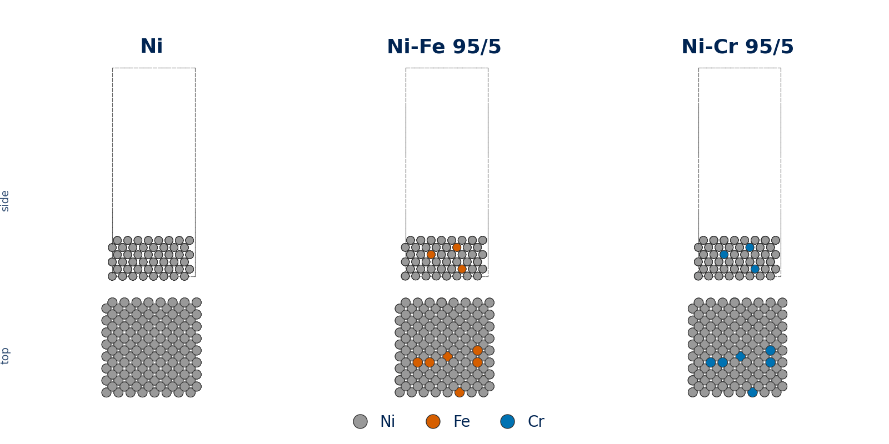
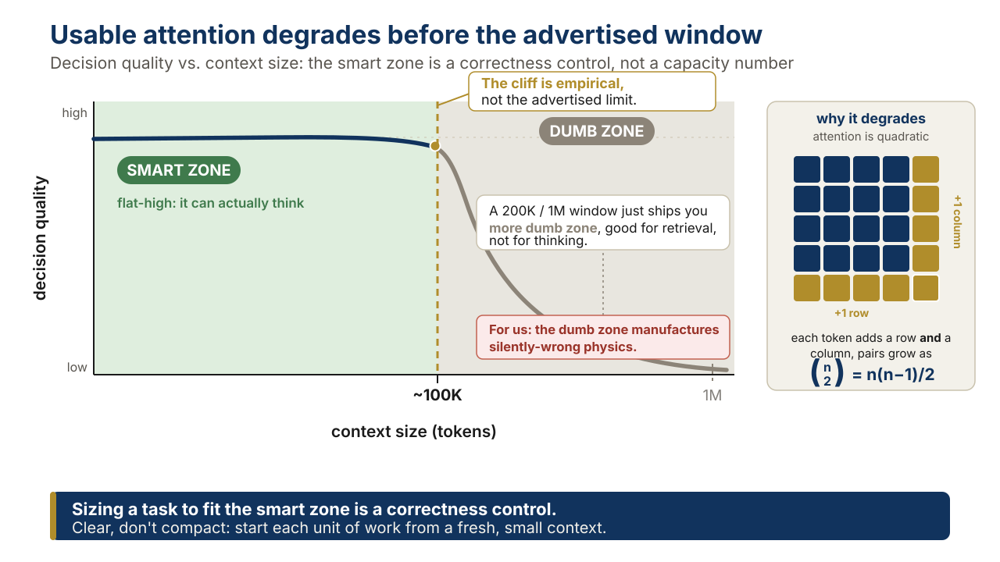
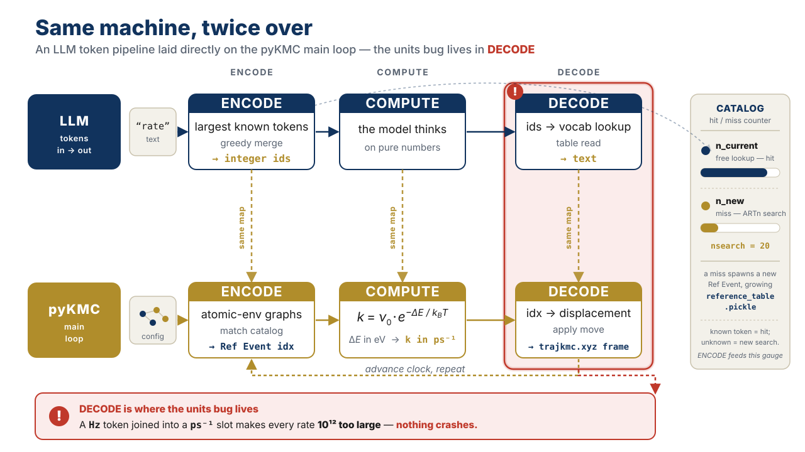
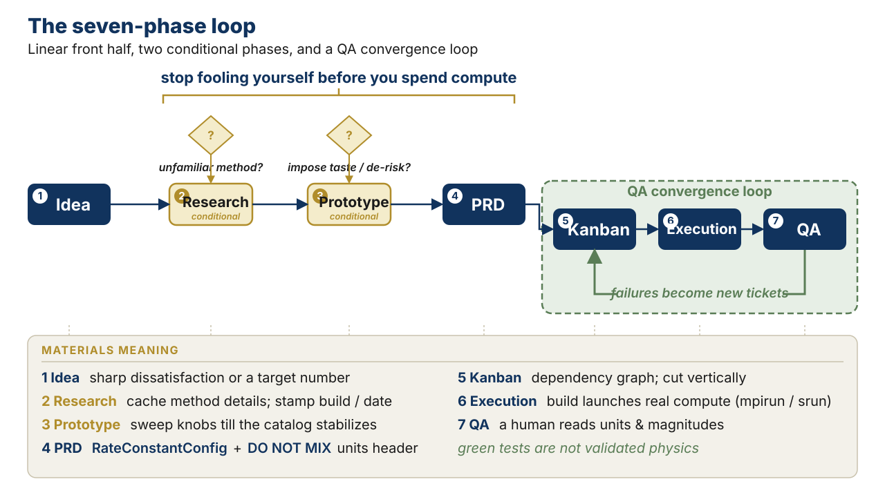
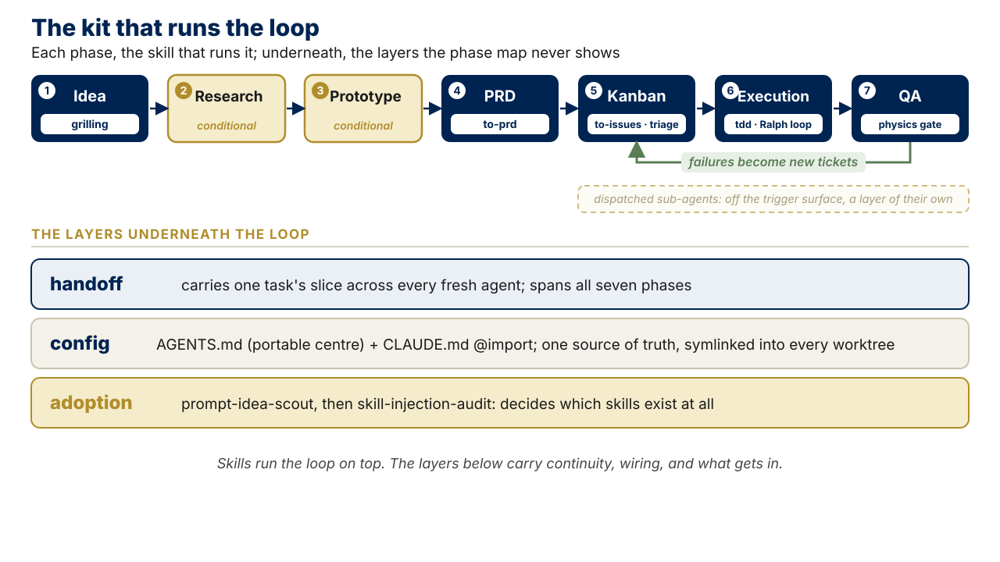
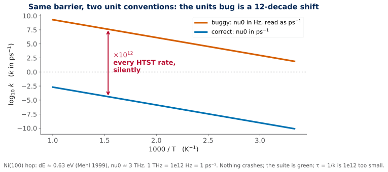

Coding with Claude Code
The disciplined engineering loop for computational-materials research: seven phases, the constraint theory underneath them, and one units bug that only a human caught.
Title & Hook · not vibe-coding · ~5 min
Coding with Claude Code, for people who validate the physics
- Not vibe-coding: the disciplined loop that produces code you can trust
- Most 'AI for coding' is written for web apps
- Workflow transfers cleanly; vocabulary doesn't
- You're fluent in the science; the new layer is the engineering workflow
- One running example, two threads, meeting at one number
Who this is for
- Comp-materials scientists & grad students who run atomistic/multiscale sims
- KMC, MD/statics, DFT, and write the code that does it
- Given: fluency in the science
- New: the AI-assisted engineering workflow on top
- Explicitly not for vibe coders
The two threads that converge
- Thread 1, substrate: periodic_system_generator → Ni/Ni-Fe/Ni-Cr FCC(001) slabs, vacancies, step edges → LAMMPS+EAM minimize → pyKMC
- Thread 2, correctness: ~23-commit harmonic-TST (Vineyard) prefactor campaign in pyKMC
- They meet at the Ni(100) surface-hop barrier dE
- Same dE the slabs study = same dE that pins the units regression test
- That convergence is why this is THE example
Thread 1 slab generation (Ni/Ni-Fe 95/5/Ni-Cr 95/5 FCC(001)) + Thread 2 HTST prefactor work, meeting at the Ni(100) surface-hop barrier dE (EAM ~0.63 eV, Mehl 1999; DFT ~0.82–0.86 eV, exchange-dominated).
the picture · Thread 1 substrate
The substrate, built from code: Ni / Ni-Fe / Ni-Cr FCC(001) slabs

The Reframe · dev-speak ⇄ research · ~7 min
The Rosetta stone: one substitution drives everything
- Deliverable: behaviour a user sees → a physical claim that survives scrutiny
- Every translation is a consequence of that one substitution
- PRD = study/method spec (a mini pre-registration)
- Bug = wrong PHYSICS: no crash, green suite
- QA = validating the physics, not click-testing a UI
The unit of work, translated
- Idea → a physics question, an artifact, or a code capability
- Feature → a new physical capability or measured quantity (the Vineyard backend)
- Bug → wrong physics, often green-and-silent (nu0 in Hz where the clock wants ps⁻¹)
- Refactor → restructure the solver without changing the numbers
- Sprint → a simulation campaign (the ~23-commit HTST push)
Idea: 'give pyKMC physically-correct per-event rate prefactors instead of one fixed constant.' Feature: pykmc/rate_constant/backends/htst.py. Bug: nu0 Hz vs ps⁻¹, every rate 10¹² too large, silently.
Artifacts, agents, and what NOT to carry over
- PRD: spec the END STATE, let implementation move underneath
- research.md asset: a sprint-lived cache allowed to rot
- Memory-less agent: why knowledge lives in contracts, not your head
- Trigger surface: the always-on cost of a skill, minimize it
- Don't import: 'ship fast, user won't notice' (our failure mode is silently-wrong)
PRD example: 'Deliver D_vac(Ni,500K) with an Arrhenius barrier validated against an EAM-NEB value; archive trajkmc.xyz + reference_table.pickle.' RateConstantConfig is the typed end-state contract.
reference · dictionary · 1 of 4
The dictionary: the unit of work
| term | in software development | in materials research |
|---|---|---|
| Deliverable | Behaviour a user sees: a shipped, working feature in the product. | A physical claim, or a reusable capability, that survives scrutiny. |
| Feature | New behaviour a user can see and use. | A new physical capability or a measured quantity (the Vineyard / HTST rate backend). |
| Bug | Code that crashes or returns visibly wrong output. | Wrong PHYSICS, often with no crash and a green test suite: the silent killer. |
| Refactor | Restructure code without changing its observable behaviour. | Restructure a solver or driver without changing the numbers it produces. |
| Sprint | A fixed-length iteration delivering a slice of the backlog. | A simulation campaign, or a focused push to land one capability (the ~23-commit HTST push). |
reference · dictionary · 2 of 4
The dictionary: plan and board
| term | in software development | in materials research |
|---|---|---|
| PRD (product requirements document) | The spec of what to build and why: problem, users, acceptance criteria. | A study or method spec, a mini pre-registration: system, conditions, the observable with acceptance bands, output files. |
| Ticket / Jira card | One scoped, trackable unit of work on a board. | One scoped sub-task of a study or code change ("minimize this slab", "add the units conversion"). |
| Kanban board | Tickets flowing through columns: to-do, doing, done. | The dependency graph of a study: stages in series, seeds / temperatures / compositions in parallel. |
| Vertical slice / tracer bullet | One thin end-to-end path through every layer, working early. | One end-to-end short run touching every pipeline stage (build → minimize → search → select → analyze). |
| research.md asset | A scratch notes file for a task, allowed to go stale. | A throwaway cache of method details (parameters, units, citations) scoped to one campaign, allowed to rot. |
reference · dictionary · 3 of 4
The dictionary: the agent and its context
| term | in software development | in materials research |
|---|---|---|
| Token | The unit an LLM bills and "thinks" in: text encoded to integer ids. | A metered second compute budget; structurally, one catalog entry (a Reference Event index in pyKMC). |
| Context budget / smart zone / dumb zone | The model's usable working memory; quality degrades as it fills. | Effective context far shorter than the advertised window (~100K usable is a heuristic); the dumb zone manufactures silently-wrong physics. |
| Compaction vs handoff | Compaction summarizes the chat to continue; handoff starts a fresh session from a doc. | Compaction buys continuity (lossy by omission you don't control); handoff buys purity (a disposable pointer doc for one task). |
| Memory-less agent | A fresh agent with no memory between tasks; state must be re-read. | Why durable method knowledge lives in contracts and docs, not your head: the next agent starts blank by design. |
| Ralph loop / coding-agent execution loop | A dumb bash loop re-running one agent against a prompt and memory file until done (Geoffrey Huntley). | An unattended loop over independent runs (run_overnight.sh under nohup): one run per iteration, append-only memory, per-iteration commit. |
reference · dictionary · 4 of 4
The dictionary: quality and design
| term | in software development | in materials research |
|---|---|---|
| QA / click-testing a UI | Checking the product behaves: click the UI, run the tests. | Validating the physics: barrier vs NEB, detailed balance, MSD linearity, units, one imaginary mode. |
| TDD / regression test | Write a failing test first; keep tests green to guard behaviour. | A test that pins a PHYSICAL contract and must stay red until the physics is right (a correctness guarantee, not a design driver). |
| Green and wrong | A passing test suite that does not actually prove correctness. | A passing suite that has ENCODED the physics error and defends it (where the units bug lived). |
| Deep module / thin interface | A small interface over a large implementation (Ousterhout); the best modules are deep. | The same taste applied to solvers: the seam you wrap a test around, so deep modules lead to strong feedback loops. |
| Skill / trigger surface | A reusable, auto-triggering capability; its always-on description is a standing context cost. | Same idea: minimize the always-on description, preferring a dispatched sub-agent or a one-paragraph rule. |
Foundations · why the workflow has this shape · ~9 min
The constraints that force the procedure
- Smart zone / dumb zone: effective context is far shorter than the advertised window
- A bigger window doesn't move that limit, it just ships more dumb zone
- Feedback loops are the ceiling, not the model, not the prompt
- Tokens are a metered second compute budget, and mirror the KMC engine
- A procedure you don't understand is one you'll abandon when rushed
Smart zone / dumb zone: a correctness control
- Cost and quality are two facts, not one: the quadratic doesn't cause the degradation
- Cost: attention is O(n²) in length (compute and memory), so big contexts are expensive
- Quality: positional bias degrades use well before the window fills (Lost in the Middle, TACL 2024; RULER)
- '~100K' is a model-specific heuristic, not a measured constant
- For us the dumb zone manufactures silently-wrong physics: size to the smart zone, clear don't compact
pykmc/htst/constants.py: omega_eV_to_hz() and hz_to_per_ps() are two functions because they are two facts, the fine-grained correctness the agent holds in the smart zone and drops in the dumb zone.
the picture
Smart zone / dumb zone: a correctness control

Feedback loops are the ceiling, and ours can be green-and-wrong
- Web feedback: types, unit tests, lint, a screenshot
- Ours adds a second tier, the physics: detailed balance, NEB match, MSD linearity, one imaginary mode, ~THz prefactor
- 'Green and wrong': a passing suite that has ENCODED the error and defends it
- Deep modules → testable → strong loops; a bad codebase makes a bad agent
- Ousterhout is skeptical of strict TDD: our regression test pins a physical contract, it doesn't 'drive design'
HTST_Test_Report/run_htst_ab.py: paired constant-vs-htst runs on matched seeds, built to fail if HTST yields no finite nu0, a physics-tier feedback loop. RateConstantConfig.require_one_negative_mode encodes physics in the type.
Tokens are the currency, and the KMC engine in miniature
- Tokens: a metered second budget, billed per call, input priced apart from output
- Feed a summary contract plus a file path, never the multi-MB dump
- reference_table.pickle IS a learned vocabulary; the KMC loop IS encode/compute/decode
- n_current = vocabulary hit (free); n_new = miss (nsearch=20 ARTn search)
- Decode silently corrupts when the number carries a different unit than the consumer assumes
validation_basin: trajkmc.xyz >1MB, reference_table.pickle ~5.7MB, lammps.log.0 ~11MB. The Ref Event is a token id; the Hz→ps⁻¹ bug is a decode failure.
the picture
Tokens are the currency, and the KMC engine in miniature

The Seven Phases · the spine of the method · ~11 min
Idea → Research → Prototype → PRD → Kanban → Execution → QA
- Two conditional phases: Research (2) and Prototype (3), skipped when small/familiar
- Last three (Kanban→Execution→QA) form a loop until the science converges
- QA failures become new tickets → back to Kanban
- A map, not a gate: tiny work skips 2, 3, most of 4
- Value: names for the steps, so nobody silently drops QA
the picture
The shape: a linear front half, a converging back-half loop

one line per phase
The seven phases, in a simulation campaign
| # | Phase | What it means for a study |
|---|---|---|
| 1 | Idea | A physics question, an artifact, or a code capability. State a sharp dissatisfaction or a… |
| 2 | Research (conditional) | Cache method details you'll forget: parameter semantics, the units convention, failure… |
| 3 | Prototype (conditional) | A throwaway convergence or recipe shakedown: sweep knobs on a tiny cell until the catalog… |
| 4 | PRD | A study/method spec, a mini pre-registration: system, conditions, observable + acceptance… |
| 5 | Kanban | The dependency graph of the study: stages in series (build→minimize→search→select→analyze)… |
| 6 | Execution | Same loop, but 'build' launches real compute (mpirun/srun), genuinely asynchronous. One… |
| 7 | QA | Validating the physics. The agent-producible half is real (unit tests, type-check, lint… |
Phase 1–3: Idea, Research, Prototype
- Idea: state a sharp dissatisfaction or a target number, not a solution
- 'Rates use a constant prefactor and that's wrong', not 'add a function vineyard()'
- Research (conditional): cache method details into a sprint-lived research.md, stamp with conditions
- Profiling harness, not a notebook: eskm ~2.5–6× faster than Python-FD, agreement 0.014%
- Prototype (conditional): sweep knobs on a tiny cell, commit the winner, delete the losers
Phase 2: commit d52f541 profiling harness (eskm dynamical_matrix vs Python-FD) → benchmarks/htst_prefactor/RESULTS.md. Phase 3: in.minimize_slab_Ni_*.lmp variants; the NiAlH_jea default failed for Ni-Cr, FeNiCrCoAl-heaweight.setfl won.
Phase 4: PRD, spec the end state, grill the design
- PRD = study/method spec: system, conditions, observable + acceptance bands, output files
- NOT the implementation: over-pinned code rots against fast-moving scripts
- Grill the design: which potential? which seeds? what defines convergence? what's the null result?
- require_one_negative_mode encodes the physics in the type
- Record deferred scope: RpaBackend bare-Vineyard until the Sharia–Henkelman κ lands (deferred, not broken)
RateConstantConfig(style: constant|htst|rpa, free_radius, fd_step, nu0_min/max_THz, require_one_negative_mode). vineyard.py header: 'Units convention (DO NOT MIX) … nu0 output: Hz (linear, NOT angular)'. Review commit a752002 (Hugo Moison).
the code
Phase 4: PRD, spec the end state, grill the design
RateConstantConfig(
style = "constant" | "htst" | "rpa", # thin interface literal
free_radius = ...,
fd_step = ...,
nu0_min_THz = ..., nu0_max_THz = ...,
require_one_negative_mode = True, # physics invariant AT the interface:
) # a true first-order saddle has
# exactly one imaginary mode.
Phase 5: Kanban, vertical slices, tickets are worktrees
- Board = dependency graph: stages in series, seeds/temps/compositions in parallel
- First ticket is a tracer bullet: one thin slice through every stage
- Cut vertically (build→minimize→search→select→analyze), never horizontally
- Tickets are literally worktree + branch names
- Independent fixes (freeze-core, units) ride parallel branches
HTST chain: 9327519 base → Vineyard+config+PHONON install → manager-ops → batched compute → reference backfill → active/refined backfill → recycling skip. Worktrees: pyKMC-htst-work, pyKMC-freezecore-work (fix/freeze-core-pbc), pyKMC-htst-units-work (fix/htst-rate-units).
Phase 6 Zoomed In · the execution loop · ~7 min
Ralph: a dumb bash loop that beats orchestration, and you already own one
- Backstop, one feature per iteration, append-only memory, per-iteration commit
- You already run it: run_overnight.sh under nohup
- 'done' must be runnable physics, not a green test suite
- Backstop is wall-clock + queue depth, not just iterations
- set -e vs set -uo pipefail IS the AFK-vs-attended decision
The 'done' predicate must be runnable physics
- Web: agent flips passes:true on green type-check + tests (defensible there)
- Physics: a green suite tells you the code RAN, never that the physics is RIGHT
- passes = a machine-checkable acceptance band in eV/Å/ps, run by the real solver
- Predicate 1: require_one_negative_mode read off the actual dynamical matrix
- Predicate 2: finite-nu0 A/B gate; coverage<1.0 is a logged WARNING, not a pass
run_htst_ab.py: status='passed' only if the failures list (built from physics observables) is empty. A 511-atom Si smoke run hit 33.3% nu0 coverage, logged as partial, not a benchmark.
the code
The 'done' predicate must be runnable physics
# run_htst_ab.py: status == "passed" only if failures is empty
if n_events <= 0:
failures.append("no reference events")
if "nu0" not in htst_table.columns:
failures.append("HTST table has no nu0 column")
if n_finite_nu0 <= 0:
failures.append("HTST produced no finite nu0 values")
if nu0_coverage < 1.0:
warnings.append(...) # WARNING, not a failure
Memory, sizing, commits, and the role shift
- Append, never update: a memory-less agent reconstructs state from the progress file
- Record the physics state: 'coverage 0.71; three events fell back to k0'
- One feature per iteration: compute_prefactors_batch shards the giant Hessian
- Per-iteration commit = bisectable; the surgical one-line units fix d705932 in its own worktree
- Ralph demotes you from anal-retentive planner to requirements-gatherer
Commit 82e7793 compute_prefactors_batch (batch size chosen by the d52f541 profiling harness); c9a74ad never-recompute-recycled = idempotency; chain ec6aa5f→…→c9a74ad bisectable.
Context & Handoff · surviving many fresh agents · ~4 min
Compaction buys continuity; handoff buys purity
- Grep the convergence line, not the log: 30 tokens vs 30,000
- Compaction is lossy by omission you don't control: drops the load-bearing caveat
- Handoff: a disposable temp-dir pointer doc carrying one task's slice
- Point, not copy: references stay correct as targets evolve
- Portable markdown → adversarial physics review by a different agent
The DIY sub-agent round trip
- Hand off a hard-to-judge bit to a prototype session (separate budget)
- It does the disposable work, returns a compressed verdict
- RESULTS.md IS the handoff-back doc, stamped with its conditions
- Same shape as a dispatched sub-agent, zero machinery
- Promote durable facts to CONTEXT.md; the handoff is the courier, not the archive
Commit d52f541 round trip: the eskm-vs-Python-FD question needed a measurement; benchmarks/htst_prefactor/RESULTS.md returned the verdict (eskm faster, conditions attached) and the planner chose the eskm path.
The toolchain · the skills that run the loop · ~6 min
The kit that runs the loop, and the kit I leave off
- The method is the abstract part; this is the concrete kit that runs it
- About a dozen skills carry the whole loop; most of what's installed I never trigger
- A skill is a reusable, always-on capability: it costs trigger surface every turn
- So the real question is when to make a skill, and when to reach for an agent, a rule, or a hook
- And: I pick what to install by evidence, then audit it before I trust it
the picture
The skills, mapped onto the seven-phase loop

Skill, agent, MCP, hook: when to use which
- Durable fact the agent must always know: a rule in AGENTS.md, not a skill
- Repeatable procedure you invoke often: a skill (it earns its trigger surface)
- Occasional, isolated, context-heavy pipeline: a dispatched sub-agent (zero standing cost)
- Hard invariant that must never break: a hook or CI (enforced, not suggested)
- MCP is a tool or data connector, not a procedure: it gives the agent a new capability
grilling is a skill (daily, every project). pyKMC engine internals are a dispatched agent (occasional, heavy context). 'No AI attribution on commits' is a rule in CLAUDE.md. 'Checks pass before push' is a hook. Same kind of need, four different homes.
I choose what to install by evidence, then audit it before I trust it
- prompt-idea-scout: triage a candidate (adopt, watch, or reject) and keep a Watch queue
- Popularity is not corroboration is not safety: a viral 'top-10 skills' list had inflated stars, dead links, one fabricated repo
- skill-injection-audit: sweep installed skills for injection, exfiltration, hidden payloads, over-broad triggers
- A real sweep: 47 scanners, 46 clean, 1 to monitor, 0 unreadable, before adopting the engineering pack
- I run superpowers, and I actively govern its '1% chance, you MUST invoke' over-triggering
Adoption gate: scout to a Watch queue, then a security-intake checklist, then a benchmark (bare agent vs +instructions vs +candidate), then adopt. The audit report is committed beside the skills.
One config, one source of truth, wired into every worktree
- AGENTS.md is the portable centre; CLAUDE.md does @AGENTS.md and adds only Claude-specifics
- Keep the contracts thin (under ~150 lines); procedures live in skills, not the contract
- One private source-of-truth repo holds the real per-project config; worktrees hold symlinks
- A post-checkout git hook auto-wires every new worktree: zero-touch
- Personal config stays private; only project assets go public (this deck included)
A setup script symlinks AGENTS.md, CLAUDE.md, and .claude/{skills,agents} into a worktree and hides the links via .git/info/exclude; the post-checkout hook re-runs it on every git worktree add.
drill-down · grilling → handoff
Grill a new feature into a plan, then hand it off to build
- grill-me or grill-with-docs: invoke it deliberately on a new feature, or a new research aim
- One question at a time, recommend an answer, explore the code instead of asking
- grill-with-docs records each decision as an ADR as the session runs: the plan writes itself
- The output is a written plan, not vibes: the destination, the decisions, what was deferred
- handoff then carries that plan to a fresh agent or the Ralph loop: point, do not copy
This section is the worked example: grill-with-docs interrogated audience, slot, size, scope, and the public/private line, one question at a time; nine decisions became ADRs; that plan is what a fresh agent builds from.
the code · anatomy of a skill
What a skill is, in nine lines
---
name: grilling
description: Interview the user relentlessly about a plan
or design. Use when stress-testing a plan before
building, or on any 'grill' trigger phrase.
---
Ask one question at a time. Recommend an answer to each.
If a question can be answered from the codebase, explore
it instead of asking. Continue until shared understanding.
drill-down · adoption & security
Adoption is evidence-gated; trust is audited
- Watch queue: a candidate waits until something corroborates it; it is not installed on hype
- Security-intake checklist: paid keys, global hooks, browser or cookie access, telemetry, manifest fragility
- Benchmark gate: bare agent vs +instructions vs +candidate, before a pack is adopted
- Audit dimensions: injection, exfiltration, hidden payloads, dangerous auto-run, attribution injection, over-broad triggers
- An installed skill runs with your permissions and reads your files: treat adoption as a supply-chain decision
The 'top-10 skills' dossier is the worked example: corrected star counts, flagged dead or redirecting URLs, caught one fabricated repo, and tagged each candidate's install caveats before anything was trusted.
drill-down · config
One config, symlinked into every worktree (build your own)
- Source of truth: one private repo mirrors each project root (AGENTS.md, CLAUDE.md, .claude/)
- Distribution: symlinks, never copies, so editing anywhere edits the one canonical file
- Hidden from the host repo via .git/info/exclude, never a committed .gitignore
- post-checkout hook re-runs the wiring on every git worktree add: zero-touch
- Decision rule, again: durable fact to AGENTS.md, procedure to a skill, pipeline to an agent, invariant to a hook
The pattern generalizes: you do not need my repo, you need the split (AGENTS.md as the portable centre) and a small wiring script. The hook just makes new worktrees self-populate.
the code · a thin CLAUDE.md
The split, as a template you can copy
# CLAUDE.md (the Claude adapter)
@AGENTS.md
## Claude-specific notes
- Model: Opus by default; a cheaper model only for
pure transcription tasks.
- Procedures live in skills, not here. Keep this short.
drill-down · trigger surface
When NOT to make a skill: the trigger-surface cost
- Every always-on skill description is read every turn: it competes for smart-zone attention
- A description is a trigger ('use when ...'), not a summary ('this does ...')
- Too many skills, or over-broad ones, and the model misfires or drowns
- Prefer a one-paragraph rule, or a dispatched agent, over a new always-on skill
- superpowers' '1% chance, you MUST invoke' is exactly the over-trigger to govern
The dumb-zone argument applies to your own tooling: a skill you rarely use still spends attention every turn it is not used. Off the trigger surface (a dispatched agent) costs nothing until called.
Practice & honest limits · descend or skip · ~8 min
What the spine leaves out: clusters, reproducibility, failure modes, objections
- HPC reality: SLURM on the Alliance (DRAC), and the sandbox is the security boundary
- A reproducible artifact, not a reproducible agent (many AI projects don't even run)
- The units bug is one genre: a taxonomy of LLM failure modes
- The four objections you will get, answered
- All four are descend-or-skip depth; the seven-phase spine is the talk
drill-down · HPC
Running it for real: SLURM on the Alliance (DRAC)
- Submit and watch: sbatch, salloc, squeue/sq, sacct, scancel
- Always required: --time and --account (plus --mem / --mem-per-cpu, --gpus-per-node)
- $SLURM_TMPDIR is fast node-local scratch, deleted at job end; module load for the stack
- /home (small, backed up) vs /scratch (big, purged) vs /project (shared); Globus for big transfers; one array job, not 1000 sbatch calls
- Security: never an unattended Ralph with --dangerously-skip-permissions on a login node or with live credentials; the sandbox is the boundary
A study run = an array job over seeds/temps, each staging inputs into $SLURM_TMPDIR, launching pyKMC under srun, copying results back to /project before the node is wiped. The Ralph loop runs inside a container/VM, never with live cluster credentials.
drill-down · reproducibility
The artifact is reproducible even though the agent is not
- Agent runs are non-deterministic; AI projects often don't even execute (~31.7% fail out of the box)
- The reproducible unit is NOT the agent transcript
- It is: committed code + pinned env (container/lockfile) + fixed RNG seed + the regression test
- Declared vs runtime dependencies drifted ~13.5x in that study: pin them
- Same discipline as any KMC study: fix the seed, archive the inputs, pin the physical contract
Reproducible study = fixed RNG seed for the BKL draws + pinned EAM potential + archived reference_table.pickle + the Ni(100) dE regression test. Rerunnable next year regardless of which agent wrote it. (arXiv:2512.22387)
drill-down · failure modes
The units bug is one genre: a taxonomy
- Slopsquatting: ~19.7% of recommended packages don't exist (USENIX Security 2025); a fabricated import is a supply-chain hole
- Insecure code: ~45% of samples carried an OWASP Top-10 vulnerability (Veracode 2025)
- Higher defect density: AI pull requests ~1.7x the issues of human ones (CodeRabbit 2025)
- Domain silent killers: wrong constants, off-by-one lattice indexing, green-but-wrong tests
- The units bug is the last row; no linter catches it, only a human reading the physics
The Hz to ps⁻¹ bug is the 'green-but-wrong test' genre: it ran, the suite was green, the numbers were 10¹² off. The taxonomy says the units bug was not bad luck, it was a predictable category.
drill-down · objections
Objections, answered
- "Won't this deskill students?" AI is the tactical programmer; the human stays the strategic designer, and reviews every diff
- "How do I trust code I didn't write?" You trust the regression tests that pin physical contracts, not the provenance
- "How is a stochastic run reproducible?" It isn't; the pinned artifact is
- "Does this fit open science / FAIR?" Yes: version prompts and CLAUDE.md, disclose AI use, share the artifact
- Disclosure is becoming a norm (Ten Simple Rules for AI-Assisted Coding in Science, arXiv:2510.22254)
drill-down · figures as code
Figures are code, not AI images
- AI image generators are unreliable for technical schematics: wrong lattices, missing components, broken connections (SciFlow-Bench)
- One controlled study found 99.8% of generated images contained fabricated detail
- So generate every figure with code: ASE, matplotlib, Graphviz, TikZ, or hand-authored SVG
- The figure becomes a version-controlled, re-runnable artifact: the deck's own thesis
- Every figure here has a source in assets/src or is hand-authored SVG; none is AI-generated
assets/src/gen_arrhenius_units_bug.py and gen_ni_slabs.py generate the Arrhenius and slab figures (the slab reads the real validation_basin structure); the flow diagrams are hand-authored SVG. Re-run when the physics changes.
QA, Takeaways & Attribution · ~2 min
Phase 7: the units bug, and the one thing to remember
- nu0 emitted in Hz (~1–10 THz), consumed as ps⁻¹ → every rate 10¹² too large
- Nothing crashed; the suite was green; the tests had pinned the error
- Fix d705932: one-line hz_to_per_ps() at the backend boundary
- Regression d6b921f: red by 10¹² before, green after, at the Ni(100) dE where both threads meet
- QA = validating the physics. Green tests are not validated physics.
the picture · the units bug
The units bug is a 12-decade shift, plotted from the pinned numbers

Attribution & the open questions
- Structure: five Matt Pocock talks; materials mapping is original to this collection
- Documents skills you may already run: grilling, to-prd, to-issues, tdd
- Open: merge Research + Prototype into one 'de-risk the method' phase?
- Open: keep the name 'Ralph' or 'coding-agent execution loop'?
- First cut: the seven-phase mapping is a proposal for discussion, not a settled standard